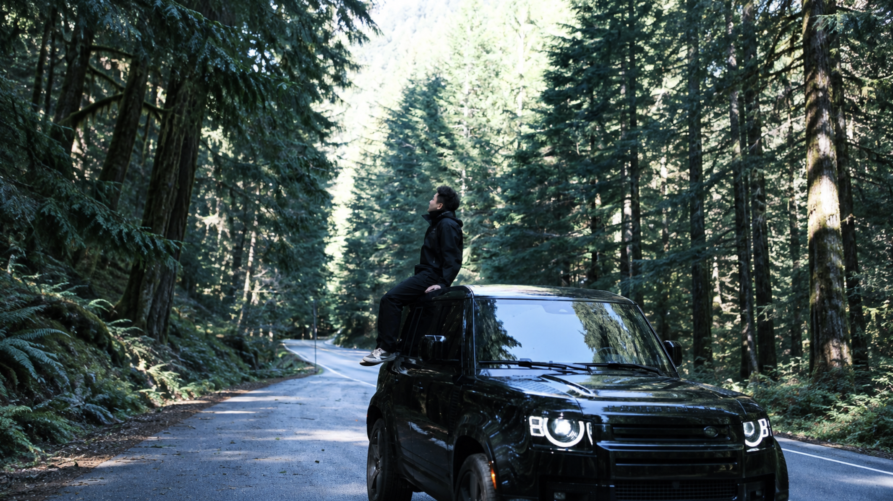

01 / SELECTED WORK
从真实问题，到具体作品。
探索 AI 如何帮助人们理解信息，
并做出更好的决策。


02 / THE PERSON BEHIND THE WORK
不止一种视角。
始终保持好奇。
郑策 Brody Zheng
我目前就读于华盛顿大学，主修环境科学与资源管理，辅修信息学。即将毕业，GPA 3.8。
我希望把环境与信息两种视角结合起来，探索 AI 如何帮助人们理解信息、分析问题，并做出更好的决策。
更多关于我03 / BEYOND THE SCREEN
生活，也是灵感现场。
在镜头之外，
寻找专注、节奏与新的故事。